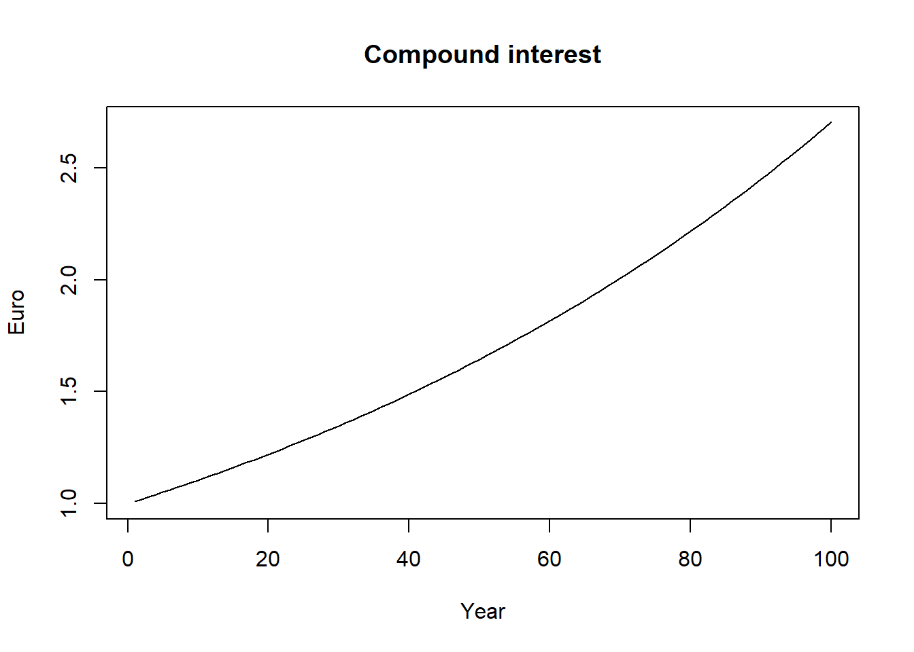
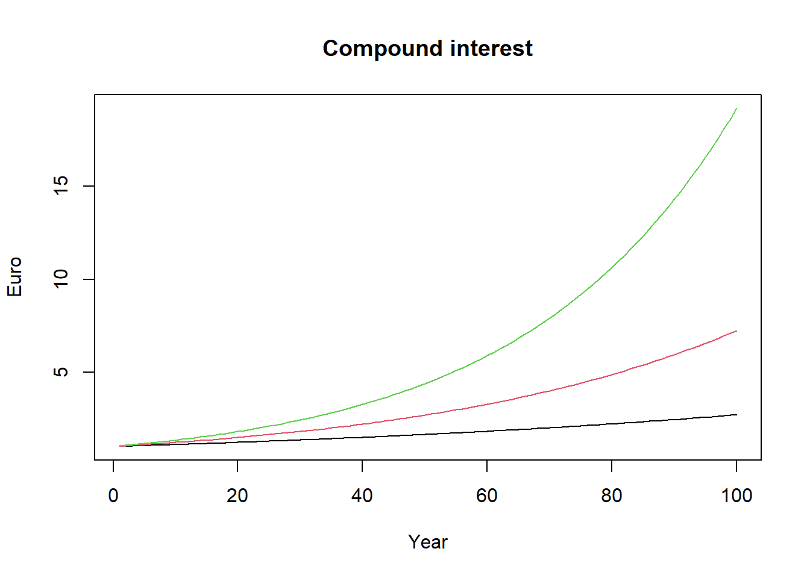

Chapter 1 Language essentials
1.1 Why R?
R is an open-source statistical programming language used worldwide for statistical analysis and data science in a vast variety of fields. The R project was released to the public in 2000 and since then The R Foundation and the R Development Core Team take care of development of the R language and of the release of new versions.1 Unlike many other computer programs for statistical and data analysis, in R you don’t perform your operations by clicking. In R you work with a script, basically a text where the user write functions to perform the desired operations, such as computing averages, transforming data and so on. Although at first this seems very difficult especially for those who do not have experience with code based work, writing your own operations as if it were normal text has many advantages. This allows you not only to think carefully about the operations you are performing (rather than just clicking left and right) but also to ensure the reproducibility of your work as academic and scientific work demand. Another very good reason for using R is the large availability of R packages. R packages are collections of functions, data and other code that extend the capabilities of “base” R. Nowadays, there are many R packages available to perform a wide variety of tasks, from data visualization, simple and sophisticated econometric analysis, web application development and much more. Not least, R’s ability to visualize data with publication quality graphs and to write data-driven texts make it (in my opinion) an ideal choice for economists. This does not mean that R is better than other programming languages widely used in statistical analysis like Python or Julia. From what I know, R is very popular among economists and for our introductory quantitative methods course R is undoubtedly the right tool.
1.2 R and RStudio
Nowadays, people do not work directly in R but use what is called an Integrated Development Environment (IDE, for short). An IDE is a software that allows to work with the programming language using a user-friendly and nice interface together with several additional features that make the coding faster and more enjoyable. RStudio is by far (again, in my opinion) the best IDE for R.2 It is simple to use and very intuitive. The RStudio Team has also developed a number of amazing and useful packages like the package rmarkdown and the package shiny.3 This book for example is written entirely in RStudio using the powerful package bookdown.
We are now going to describe very briefly the interface of RStudio. As you can see from Figure 1.1, RStudio is composed of 4 panes.4

Figure 1.1: The four panes in RStudio.
In pane 1, we can see the R script (but it could also be another file, like an R Markdown file or a Python script). This is were we will type our code. From the script, we can then execute the code. The output of our code will be printed in the console. In Figure 1.1, the console is shown in pane 2. You can perform operations directly from the console. The result will be displayed immediately in the console itself. This can be useful on certain occasions, such as when you need to calculate something on fly that does not necessarily has to be included in your main work. In all other occasions it is recommended to write the code in the script.5 In pane 3, we can see different tabs. In the environment tab is where you will see variables, functions and databases saved during the working session. In the history tab, you will see the list of all operations performed during the working session and from there you can execute your code again.6 Your history is automatically stored by RStudio and saved in a separate file (although this function can be also deactivated).7 In pane 4, we have again different tabs. The files tab shows basically the files contained in your computer directories, like for example your project directory if you are working with an RStudio project.8 From there you can create new files, rename files, delete files and so on. In the plot pane you will see your graphs printed (like scatter plots, bar charts, etc.). In the help pane, as you can easily guess, you can get some very useful information about R and RStudio and the R language in general and in the Viewer tab more complex things are visualized, like for example plotly graphs.9
How to execute code?
1.3 Basic operations
We now start by looking at some very simple operations that can be performed in R. To begin with, R can be used to solve arithmetic operations, just like a normal calculator.
2 + 2## [1] 4R includes standard mathematical functions such as the square root function, the exponential function and the logarithmic function.
sqrt(25)## [1] 5exp(0)## [1] 1log(1)## [1] 0With a left pointing arrow (a “small than” sign followed by a minus sign), <-, we can assign a value to a variable. Here, for example, we assign the value 15 to the object x. In this case, the variable x is saved in the environment (pane 4 in Figure 1.1).
x <- 15
x## [1] 15To remove any variable from the environment, we can use the function rm() with the name of the variable that we wish to delete. Here, we delete the variable x that we have created above.
rm(x)With the function c(), we can assign a series of value to a variable. The letter c stands for something like “concatenate”. The result is a vector.
x <- c(1, 2, 3)
x## [1] 1 2 3is.vector(x)## [1] TRUEWith the function ls, we can print in the console the list of the variables that we have so far created.
ls()## [1] "x"It is a good practice to start every new working session in R with an empty environment. This short piece of code remove all variables that we have so fare saved in the environment (not many in our case!). You could put something like this at the beginning of your R script so that each time you run the script previously created variables but also other objects like data and functions get deleted. Of course, it is up to you to figure out when it is appropriate to use such a function and when not.
rm(list = ls())R can also easily creates sequences of numbers. There are two ways. The first is by using the colon operator :. In the following example, we are creating a series of integers from 1 to 10.
a <- 1:10
a## [1] 1 2 3 4 5 6 7 8 9 10The second way is by using the seq function. With the seq function, you can specify the beginning (from), the end (to) and the increment (by) of the sequence of numbers.10
b <- seq(from = 1, to = 10, by = 1)
b## [1] 1 2 3 4 5 6 7 8 9 10We can also generate random numbers from a normal distribution specifying mean and standard deviation (more on the normal distribution in Part II). The set.seed function allows us to generate the same numbers. This means that if you and I have the same seed, we will generate the same set of random numbers.11
set.seed(1234)
rnorm(n = 10, mean = 0, sd = 1)## [1] -1.2070657 0.2774292 1.0844412 -2.3456977 0.4291247 0.5060559
## [7] -0.5747400 -0.5466319 -0.5644520 -0.8900378A very important function in R is the length function. The length function comes in handy in a number of situations. Essentially, it tells us the number of elements in a vector (but also other types of objects). We can now use the length function with a sequence of numbers from 1 to 10 increasing by 0.1 generated using the seq function. How long is this vector?
length(seq(from = 1, to = 10, by = 0.1))## [1] 91R also includes all the fundamental types of operators like arithmetic, relational and logical operators. Arithmetic operators are what we remember from school, like + - * /. Power elevation is done with the ^ sign.12
5^2## [1] 25Relational operators are used to compare values. They are kind of making a question to R where the response will be a “true or false” judgement.
100 >= 100## [1] TRUE99 > 100## [1] FALSEWith the double equal operator ==, we are asking R if two expressions are equal to each other.13
2 + 2 == 4## [1] TRUEThe operator ! is the negation operator. It can be read as NOT. With the following expression, we are asking R if 99 is NOT equal to 100.
99 != 100## [1] TRUEHere, we are asking if 1 is NOT equal to 1.
!(1==1) ## [1] FALSEIn R we also find the classical logical operators, like & and |. The operator | asks if at least one expressions is true. The operator | can be read as OR. The following expression asks if 1 is equal to 1 OR 2 is equal to 3. It will return true if at least one of the two expressions is correct.
(1==1) | (2==3) ## [1] TRUEThe operator & (read AND) returns true when all expressions are true. The following expression asks if 1 is equal to 1 AND 2 is equal to 3.
(1==1) & (2==3) & TRUE == FALSE## [1] FALSEBefore concluding this section, we need to discuss briefly what in R is called the “recycling rule”. This could help avoiding some bad surprises when working in R. What happens when we add two vectors together? If the two vectors have the same length, R will simply perform an the element-by-element sum. If the two vectors are a multiple of each other, the elements of the shorter vector will be “recycled” to match the length of the longer vector.
a <- c(1, 2)
b <- c(1, 2, 3, 4, 5, 6)
a + b## [1] 2 4 4 6 6 8As you can see from the output above, R does not give us any warning messages about the recycling rule. On the contrary, when we sum two vectors where the shorter vector is not a multiple of the longer vector, R will give us a warning message but the recycling rule will be applied anyway.
a <- c(1, 2)
b <- c(1, 2, 3, 4, 5)
a + b## [1] 2 4 4 6 61.4 Basic data structures
We now move to discuss the basic data structures in R. Vector, Matrix, Dataframe, List
1.5 if else statement
The statistical language R includes the traditional if else statement. Let us make a simple example.14 The object x takes the value 10. The object y takes the value 2. If x is smaller or equal y, R prints the sentence "x is smaller or equal y" in the console, otherwise it prints "x is larger than y". Pretty straightforward.
x <- 10
y <- 2
if (x <= y) {
print("x is smaller or equal y")
} else {
print("x is larger than y")
}## [1] "x is larger than y"An alternative version of the if else statement is the ifelse() function. It essentially does the same thing but in a vectorised fashion. Here, we apply the ifelse() function to a vector of random numbers created with rnorm. Then, we ask if each element in the vector x is smaller or equal to zero or larger than zero. The vector with the corresponding results will be printed in the console.15
x <- rnorm(10, 0, 1)
ifelse(x <= 0, "x is smaller or equal zero", "x is larger than zero")## [1] "x is smaller or equal zero" "x is smaller or equal zero"
## [3] "x is smaller or equal zero" "x is larger than zero"
## [5] "x is larger than zero" "x is smaller or equal zero"
## [7] "x is smaller or equal zero" "x is smaller or equal zero"
## [9] "x is smaller or equal zero" "x is larger than zero"1.6 For loops
To make it as short as possible, a loop is a piece of code that repeat operations over and over again, just as the name suggests. A for loop is a piece of code that tells the computer to perform a certain operation for every value or element in a variable (Grolemund 2014).16 An example is very much needed.
x <- 1:5
for (i in x) {
print("Hello")
}## [1] "Hello"
## [1] "Hello"
## [1] "Hello"
## [1] "Hello"
## [1] "Hello"What happened? The for loop has printed the word "Hello" five times. First of all, we have defined the variable x which is a sequence of integer numbers between 1 and 5. Then, we have told R to print the word "Hello" for every i (i.e. every element) in x, which is just a sequence of numbers of five elements. The same operations is repeated five times. We could have done the same thing by looping over a character vector with five elements, like for example the first five days of the week. The results would have been the same.
x <- c("Monday", "Tueasday", "Wednesday", "Thursday", "Friday")
for (i in x) {
print("Hello")
}## [1] "Hello"
## [1] "Hello"
## [1] "Hello"
## [1] "Hello"
## [1] "Hello"R will automatically assign the numbers or character values to the index i in each run of the loop. This is very useful. The index i can be used as a normal variable within the body of the loop to perform any type of operations, as math calculations and vector indexing. Here, we raise every i from 1 to 5 to the second power.
x <- 1:5
for (i in x) {
print(i^2)
}## [1] 1
## [1] 4
## [1] 9
## [1] 16
## [1] 25In the next example, we loop over the character vector containing the names of the first five days of the week. We now want R to combine the sentence “Today is” with every element, i.e. the names of the first five days of the week, stored in the vector x. We use the function paste() to combine our sentence “Today is” (which is the same all the time) with each single value that the index i will assume. The index i assumes in turn each single element of the character vector x.
x <- c("Monday", "Tueasday", "Wednesday", "Thursday", "Friday")
for (i in x) {
print(paste("Today is", i))
}## [1] "Today is Monday"
## [1] "Today is Tueasday"
## [1] "Today is Wednesday"
## [1] "Today is Thursday"
## [1] "Today is Friday"So far the output of the loop is printed in the console. However, it would be much more useful if the results were saved for later use in some sort of placeholder variable. How to do this? We now make an example from the financial world. Assume that we deposit 1€ in a bank account that promises to pay 1% interest per year. Thanks to the the mechanism of compound interest the value of our deposit will grow exponentially. In the following formula, \(A\) is the amount that we will calculate using the for loop, \(P\) is the principal, i.e. the initial deposit of 1€, \(r\) the interest rate, and \(t\) the number of years.
\[A = P (1 + r)^t\]
We now want to calculate how the value of our initial deposit of 1€ evolves over time and then store the results to plot them later. First, we create our placeholder variable. This is the object called A, in the code below. We create this using the function numeric. We must also specify the length of our placeholder. In this case, it will have 100 elements, i.e. the 100 years of our financial investment. We must also define the interest rate and the principle. \(r\) is going to be 1% and the principal \(P\) is going to be 1€. Notice how within the body of the loop we have essentially repeated the formula that we have given above. However, there is a fundamental difference with the loops that we have seen until now. With every run of the loop we are filling the vector A with the result of the formula P * (1 + r)^t for every t from 1 to 100.
A[1] <- P * (1 + r)^1 \
A[2] <- P * (1 + r)^2 \
\(...\) \
A[100] <- P * (1 + r)^100 \
years <- 100
A <- numeric(years)
r <- 0.01
P <- 1
for (t in 1:years) {
A[t] <- P * (1 + r)^t
}All is left to do is to plot the data using the plot() function. The arguments of the plot() function are almost self-explanatory. Input x and y take a series of numerical values (of equal length) for the horizontal and vertical axis, respectively. With xlim and ylim, we set the range of the axis. We can see that the x-axis will go from 1 to 100, i.e. from 1 to years and that the y-axis will go from 1 to the largest value of the vector A found using the function max(). The argument type will set the type of plot desired. Here, l stands for “line”. The argument col will determine the color of the line, the argument main the title of the plot, and finally the arguments xlab and ylab the labels of the horizontal and vertical axis.17
plot(x = 1:years,
y = A,
xlim = c(1, years),
ylim = c(1, max(A)),
type = "l",
col = "black",
main = "Compound interest",
xlab = "Year",
ylab = "Euro")
1.7 Nested loops
We can nest loops within other loops. Here, we expand the previous example creating some alternative scenarios with different interest rates. The first for loop (index t) deals with repetitions over time, just as in the previous example. The second for loop, allows us to simulate different scenarios using different assumptions about the interest rate. As you can see, we have created a vector r with three different rates of interest (1%, 2% and 3%). This time, we will save our data in a matrix called A. Why in a matrix and not in a vector? Because matrices have tow dimensions, columns and rows, as we have seen above. The rows of the matrix will be the time dimensions of the simulation while the columns will correspond to the scenarios.
years <- 100
r <- c(0.01, 0.02, 0.03)
A <- matrix(nrow = years, ncol = length(r), byrow = TRUE)
P <- 1
for (t in 1:years) {
for (s in 1:length(r)) {
A[t,s] <- P * (1 + r[s])^t
}
}To make the code more elegant and concise, we can use a simple loop to include the three scenarios in the plot. First, we must open a plot without the inputs for the variable x and y. As you can see, we have included the word NULL instead of x and y.18 We then code the rest of the plot as we did above. What would be the alternative? The alternative would be to repeat the lines function three times, each time using the desired scenario as input, e.g. A[,1] and so on (or to include the first scenario directly in the plot and then use two times the lines function). Note that the color will also depend on the index of the loop (l) and therefore on the scenario as we want a different color for each scenario (see col = l). In this case, the colors will picked by following the default order of colors palette in the plot() function.19
plot(NULL,
xlim = c(1, nrow(A)),
ylim = c(1, max(A)),
main = "Compound interest",
xlab = "Year",
ylab = "Euro")
for (l in 1:ncol(A)) {
lines(A[,l], type = "l", col = l)
}
1.8 Simple functions
Small but important digression. The word function is a reserved word. A reserved word is a word that you cannot use to give names to your objects. You may find a list of reserved words in the R Documentation. Take a look here if you want.20
my_fun <- function(x, y) x^y
my_fun(x = 5, y = 2)## [1] 25Putting everything together
Let us now try to write a function that put together all the things we did in the previous paragraphs, namely creating the placeholders, running the loop and generating a plot.
my_fun <- function(time, scenarios) {
r <- scenarios
A <- matrix(nrow = time, ncol = length(r), byrow = TRUE)
P <- 1
for (t in 1:time) {
for (s in 1:length(r)) {
A[t,s] <- P * (1 + r[s])^t
}
}
plot(NULL,
xlim = c(1, nrow(A)),
ylim = c(1, max(A)),
main = "Compound interest",
xlab = "Year",
ylab = "Euro")
for (l in 1:ncol(A)) {
lines(A[,l], type = "l", col = l)
}
}my_fun(time = 10, scenarios = seq(0.1, 0.5, 0.1))
Pretty cool, isn’t it?
References
For an interesting but a bit technical presentation of the R language see the article “R: A language for data analysis and graphics” written by the two founders of R, Ross Ihaka and Robert Gentleman (Ihaka and Gentleman 1996).↩︎
I personally have only used RStudio Desktop Open Source Edition.↩︎
In this text we do not have time to introduce to these two great R packages. However, I highly recommend seeing what they are all about.↩︎
Note that from now on we will use the term R for simplicity but we are actually talking about using R within RStudio.↩︎
The interface of RStudio is very flexible. It can be modified easily, such as changing the order of panes or excluding some of them. So the order of the panes that you see here can be changed quite simply.↩︎
you can also re-execute your code from the console using the un and down arrows of the keyboard.↩︎
We omit talking about the two remaining tabs.↩︎
Plotly is an R package named after the company Plotly that allows to make some very cool interactive charts. Some of the graphs in this book are made using this package.↩︎
If you want to know more about an R function and its arguments, use the help menu in the bottom-right pane (pane 4 in Figure 1.1) or simply type in the console
?followed by the name of the function, e.g.?seq. This will open the help menu at the right page.↩︎This function is essential if we want someone else to be able to replicate the results of our simulations. This might be the case when we want to share our work with our fellow students and colleagues or with our thesis supervisor or when we want to publish a paper presenting some simulation work.↩︎
There are other mathematical operators in R, such as matrix multiplication
%*%. We do not discuss this at the moment.↩︎Be careful when using the double equal operator because the single equal sign
=in R can be used as an assignment operator, e.g.x = 5. This is why I recommend using the assignment operator<-rather than=.↩︎Please note the spacing inside the body of the
if elsecall as well as the placement of the curly brackets. It is important to keep your code tidy following some basic styling rule when coding in R (as in any other programming language). It is also critical that theelsefunction is preceded by the closing curly bracket}otherwise the code will not work.↩︎We will use this function later on in the text to create so-called dummy variables.↩︎
You may want to look at the chapter on loops in the excellent book titled Hands-On Programming with R by Garret Grolemund (Grolemund 2014), author of a series of amazing books about R and Data Scientist at RStudio. You can access the chapter here. In the book, the author also describes other types of loops such as
whileandrepeatloops something that we do not have time to cover here.↩︎To see the complete list of arguments of the
plot()function, type?plot()in the console.↩︎NULLis a special object in R that stands for “nothing exists”. See this post from r-bloggers.com.↩︎Alternatively, you can create your own vector of colors. This is left to the reader as an exercise.↩︎
Short story. One time my model was giving strange results and I couldn’t understand why. Then I realized that I was using the word
pito name the inflation variable. Try to typepiin the console. It is the mathematical constant \(\pi\). The tricky thing here is that you can temporarily assign other values to the objectpibecause it is not a reserved word, strictly speaking. It is rather a pre-stored constant. But you should never use name that are already assigned to name your own variables, e.g. never useTorF!↩︎